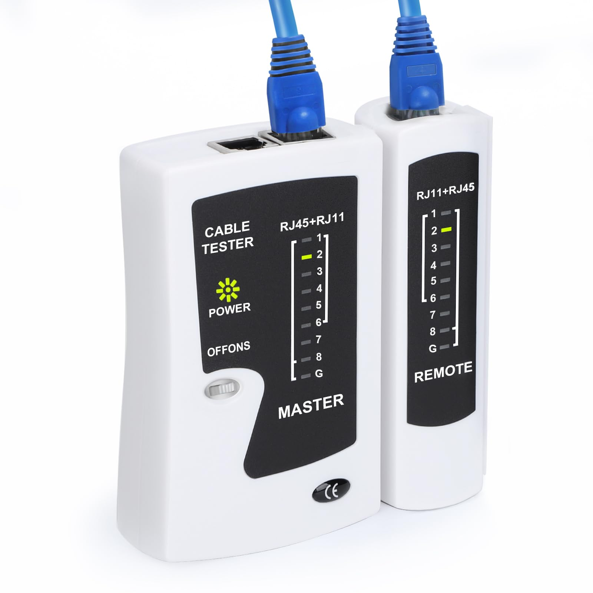

Foundational Troubleshooting: CNC Communication
Objective
This document establishes the mandatory foundational checks that all Service Technicians and Managers must perform before escalating communication issues to the Applications Manager or Startup Manager.
Background
Escalations must only occur after basic physical and network layer troubleshooting has been exhausted. Recently, significant downtime has occurred due to a failure to verify basic physical connections (e.g., internal cable routing failures that could be bypassed immediately with an external cable).
Required Technician Toolkit
- • Network Cable Tester Kit (to verify continuity and pinouts on both ends of a cable).
- • 100ft Standard Ethernet Cable (Cat5e/Cat6).
- • 100ft Crossover Ethernet Cable (Specifically for older SPUD controllers. Note: Crossover requires pins 1 & 2 to cross with 3 & 6 / Green and Orange pairs swapped).

1
Phase 1: The Universal Baseline Check (All Controllers)
Regardless of the controller generation (SPUD, Aldebaran, or TarsNC), the absolute fastest way to isolate a communication failure is to bypass the machine's internal routing.
Before escalating, perform the External Cable Bypass:
- Connect your proven 100ft external network cable directly from the network port on the desktop PC (configured for machine control) to the machine control port.
- If communication is restored, the issue is an internal cable failure. You can now work backward to find the physical break, bad connector, or replace the internal run.
- If communication still fails, proceed to the specific controller troubleshooting steps below.
2 Phase 2: Controller-Specific Protocols
| Generation | Proxy Service | Notes / Technology |
|---|---|---|
| SPUD ('70s / '80s) | PC-Mill | Requires a Crossover Cable. Standard patch cables will not work. |
| Aldebaran (2000s) | Mill-Proxy / Q-Proxy | Q-Proxy utilized for digital proxy configurations. |
| TarsNC (Current) | S-Proxy | Communicates with Siemens Sinumerik 1 overlaid with Tarus software. |
SPUD Controller (PC-Mill) Troubleshooting
Follow these steps in exact order when responding to a SPUD communication error.
Crucial Network Note: SPUD controllers require a crossover cable. A crossover requires pins 1 & 2 to cross with 3 & 6 (Green and Orange pairs swapped).

1
Power Down and Reseat
Power down the machine entirely. Reseat the network cable at the computer network port and at the machine control port. Ensure you are grounded, then remove and carefully re-seat the Flash card into the Mill PC (CPU board).
2
Verify Static IPv4 Settings
Before testing communication, verify the Windows PC's Network Adapter is still holding its assigned Static IP address. If the PC has defaulted to a DHCP/APIPA address (169.254.x.x), communication will fail regardless of the cable.
3
Power Up and Ping Test
Turn the machine on. Open Command Prompt and attempt to ping the machine's communication IP address:
ping 192.0.0.47. If successful, communication is restored. If it fails, proceed.4
Verify Windows HOSTS File (Admin)
Navigate to
C:\Windows\System32\drivers\etc. Open Notepad as Admin, then open `hosts`. Verify the exact line: 192.0.0.46 PC MILL. (Note: .46 is the proxy IP, intentionally differing from the .47 machine IP). Correct if missing or has a # in front.
5
CPU Board Environmental & Hardware Check
Unplug the flash card and re-seat it into the CPU board one more time, then test. If it still fails, inspect the cooling fan on the CPU board. In hot manufacturing environments (especially shops without AC), these fans fail, causing the board to overheat and drop communication.

Heatsink / Fan Area
Flash Card / Storage Area
Diagnostic Tip for CPU Overheating: Ask the machine operator or floor supervisor if they normally run an external box fan aimed into the open electrical cabinet. If they say yes, you immediately know heat/fan failure is a chronic issue. Install a proven working test CPU. If communication restores, offer the customer a new CPU to replace their broken/overheating unit.
Aldebaran (Mill-Proxy / Q-Proxy) Protocol
Digital communications utilizing standard straight-through Ethernet cables.
1
Power Cycle & Reseat
Power down machine and PC. Reseat standard Ethernet cable at the PC's network port and the Aldebaran machine control port.
2
Verify Static IPv4
Verify the Windows PC's Network Adapter is holding its assigned Static IP address on the correct subnet. APIPA (169.254.x.x) means network layer failure.
3
Power Up & Ping Test
Power up the machine and PC. Open Command Prompt and ping the machine's specific IP address. Success = physical/network layers intact.
4
Verify Proxy & Firewall
Open
services.msc. Verify Mill-Proxy or Q-Proxy is Running. Restart if hung. Check Windows Firewall is not blocking the executable.TarsNC (S-Proxy / Siemens) Protocol
Proprietary overlay communicating directly with Siemens Sinumerik 1 architecture.
1
Verify Connections & Correct Port (CRITICAL)
Power down and reseat straight-through cables. Ensure connection on Siemens NCU is in the correct port: Service port (X127) or Plant network port (X120). Wrong port is a major failure point.
2
Verify Static IPv4
Verify PC NIC is set to the correct Static IP sharing the Siemens NCU subnet (e.g., 192.168.214.x).
3
Ping the Siemens NCU
Turn machine on. Ping Siemens NCU IP. Healthy network path responds in < 5ms.
4
Verify S-Proxy & Advanced Firewall
Open
services.msc, verify S-Proxy is Running. If NCU pings but S-Proxy fails, check Windows Firewall allows S-Proxy traffic, Siemens S7 discovery (UDP), and ISO-on-TCP (TCP port 102).3
Phase 3: Escalation Policy
Do not escalate to Startup Managers or the Applications Manager until you have confirmed ALL of the following:
- Tested the physical connection using a known-good external 100ft cable.
- Verified the correct cable type is used (Crossover for SPUD, Standard for Aldebaran/TarsNC).
- Completed all controller-specific ping tests and proxy service configuration checks.
If all the above have been completed and the machine still will not communicate, compile your findings (including IP configurations, ping results, and physical bypass results) and initiate escalation.